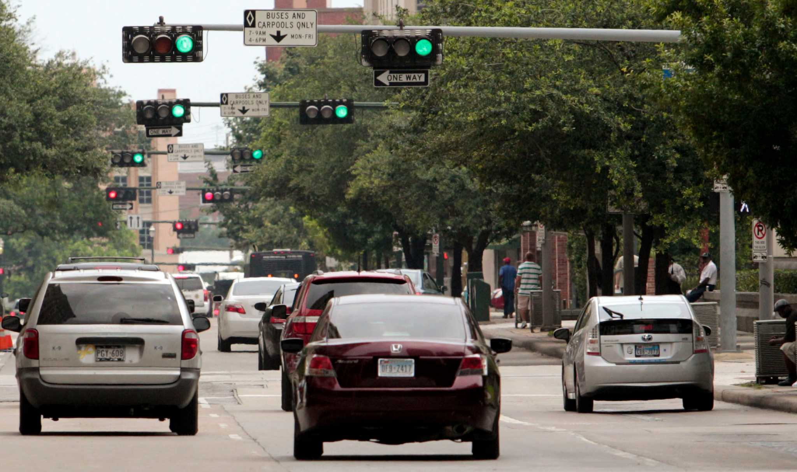

CEID provides comprehensive traffic engineering services that enhance roadway safety, improve traffic operations, and support efficient transportation systems across Texas. Our experienced engineers develop practical, data-driven solutions that meet the needs of communities, government agencies, and private clients while complying with applicable state and local standards.
We work throughout every stage of project development, from planning and traffic analysis to design and implementation, ensuring transportation facilities operate safely and effectively for all road users.
At CEID, we combine engineering expertise with innovative solutions to deliver reliable traffic engineering services that improve mobility, increase safety, and support the successful delivery of transportation infrastructure projects throughout Texas.
